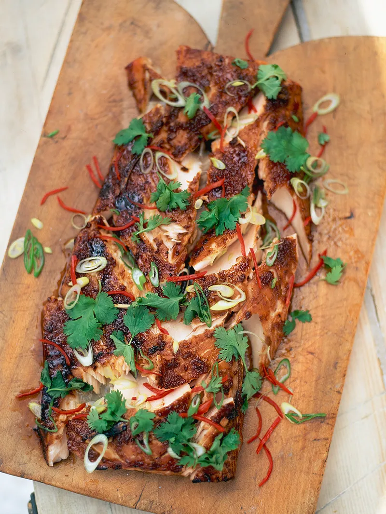

Marinated & Grilled Salmon

Flavour Party
Sticky, with citrus notes and a chilli kick.
This easy grilled salmon is gorgeous and juicy on the inside, dark and sticky on the outside. A perfect dish of contrasting, extravagant flavours, perfect for late summer dinners in the garden or sharing with friends.
Ingredients
- 2 sticks of fresh lemongrass, slightly bashed to release flavours
- 1 bunch of fresh coriander (30g), picked and roughly chopped
- 5cm piece of fresh ginger, peeled and grated
- 4 cloves of garlic, grated
- 1/2 small bottle of low-salt, dark soy sauce
- 1 large salmon fillet, (about 1kg)
- 4 tbsp runny honey
- 2 red chillies, de-seeded and sliced
- 4 spring onions, finely sliced
- 2 limes, halved
Instructions
- Bash up your lemongrass. Pick the coriander leaves and finely slice the stalks. Peel and finely grate the ginger and garlic.
- Mix the lemongrass, coriander stalks, ginger and garlic with the soy sauce, then rub all over the salmon fillet. Leave it to marinate for an hour or so, either in a plastic bag or on a tray covered with clingfilm.
- Preheat your grill to its highest setting. When you're ready to cook the salmon, remove it from the marinade, brush with the honey and grill for 10 minutes.
- De-seed the chillies and finely slice with the spring onions.
- Fork up the cooked salmon a little so everyone can see the lovely, dark, sticky outside and the juicy, pink fish underneath.
- Sprinkle the chillies and spring onions over the salmon with the reserved coriander leaves. Squeeze over the lime.
- Serve with fluffy white rice, and some steamed greens tossed in sesame oil for that perfect touch.